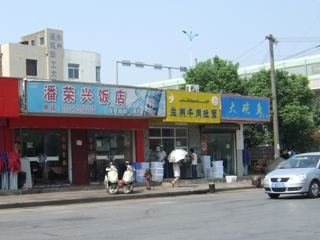
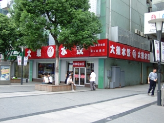
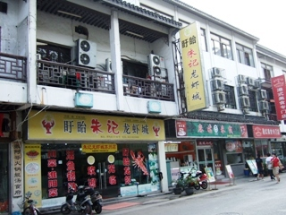
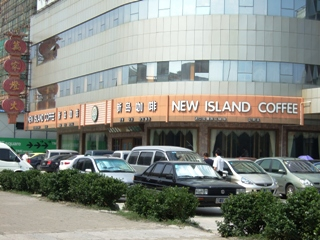

中国の飲食店の利用方法
中国の旅行や滞在での楽しみは、現地での食事ですよね。フリータイムなどでは自分で好きな場所へ行って食事をするのもいいですが、現地のルールや支払方法がよくわかりませんね。
ここでは中国の飯屋、レストランなどで食事をするときの手順や決まりを紹介します。
小さな飯店など
よく言われますが「小さく汚い店ほどうまい」・・・まあ例外もありますが、万国共通ではないでしょうか。
中国ではあちこちに小さな飯店があり、昼夜を問わず人で賑わっています。見た目はあまり衛生的ではありませんが、値段が安く、味も美味しいということで、地元の人には非常に人気があります。

日本ですとカタログのようになった写真付きメニューがありますが、小さな飯店などでは壁に大きなメニュー表があり、それで食べたいものを選んで注文する、という形になります。また、日によって用意できないものや、初めから出せないメニューなどもありますので注意しましょう。
お金が後払い、先払い様々ですが、小さな飯店に関しては後払い制の方が多いようです。小さな飯店などでは、日本語はもちろん英語もほとんど通じません、すべて会話は中国語になりますので,、まったく会話ができない方は、ちょっときついかも知れません。
中規模なセミセルフ支払い式飲食店
繁華街などに良く見られます。入り口にレジがあるのでそこで注文をし、支払い、レシートを受け取ります。それからテーブルを探して、テーブルの上にレシートを置くと係員がレシートを確認し、注文したものを持ってきてくれるというシステムです。もらったレシートはすぐしまわないようにしましょう。

中規模な完全セルフ式飲食店
いわゆる、マクドナルドやケンタッキーといった、支払いから商品運搬まで自分でするタイプの店です。ただし
中国では食べ終わったゴミやトレイなどを自分で片付ける必要はなく、そのまま店を出ることができます。片付けの仕事は店員がやってくれます。
中規模なレストランなど
日本のレストランと同じように、テーブルでメニューを確認し、係員に注文するというシステムです。ただ、先払い式の場合もありますので、係員に注文を言い終わると向こうから「○○元」です。と言ってきます。そのまま支払いましょう。あとは日本と同じです。係員が食べ物を持ってきますので、食べ終わったらそのまま帰ります。

大規模なレストラン、喫茶店、ホテルの飲食店等
日本のレストランなどと同じ、テーブルで注文、精算は最後というシステムです。ただ日本のように伝票をレジへ持っていく必要はほとんどありません。帰るときに手を上げて、係員に「精算」といえば、テーブルで精算ができます。またお釣りも持ってきてくれます。

中国旅行注意に戻す